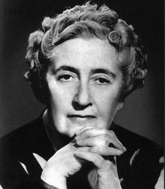

Agatha Cristie
An author famous for her Murder Mystery books, often refered to as the "Queen of Crime".
Part 2!
- Born: 15th of september 1890.
- Age: Dead.
- Country of Residence: England.
Famous works:
- Hercule Poirot series,
- Miss marple series.
- And then they were none.
Face:
